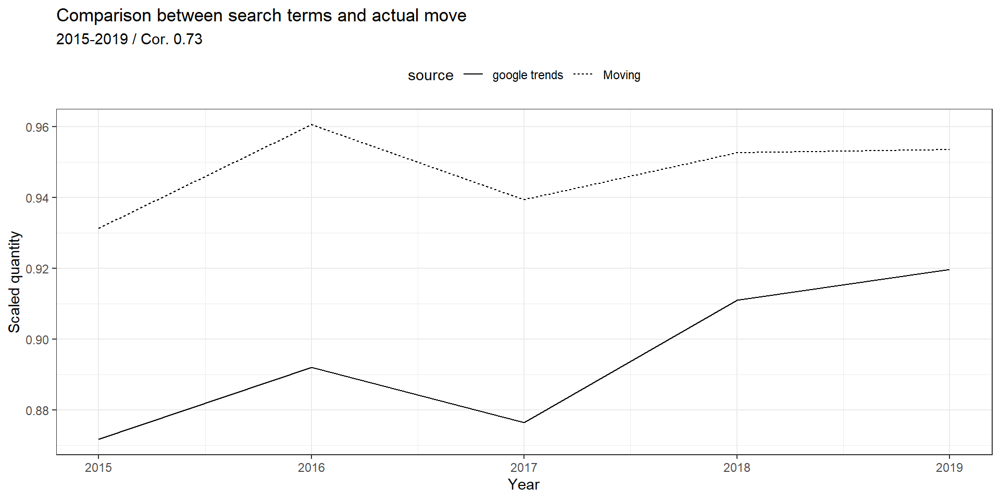
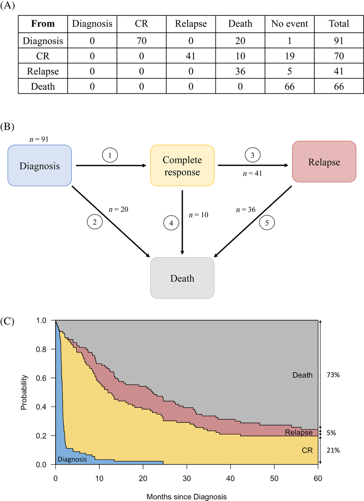

Did the Covid-19 impact migrant residential mobility patterns in Switzerland?
Vestin Hategekimana
To what extent has the COVID-19 crisis produced an uneven pattern of residential mobility in Switzerland?
Why does mobility in time of crisis matter? (1)
The primary motivators for migration to Switzerland predominantly revolve around economic prospects, including job opportunities, as well as the reunification of families (Steiner & Wanner, 2019).
The majority of migrants reside temporarily, yet for those aspiring to establish a permanent home in the country, internal mobility serves as a means to attain a more favorable circumstance. (Paul, 2011; Zufferey et al., 2021).
Why does mobility in time of crisis matter? (2)
Economic factor play a great role in residential mobility (Wanner, 2017):
Higher income: moving more and between municipalities
Experiencing unemployment or witnessing a surge in income: higher mobility
Crises, like the Covid-19 pandemic, adversely affect the economy, manifesting in phenomena such as partial unemployment (Ferro-Luzzi & Weber, 2022)
Mobility during Covid-19 outbreak
Restricted mobility (Anastasiou, 2022; Beria & Lunkar, 2021; Finn & Jakobson, 2021; Kempny, 2023; O’Brien & Eger, 2021)
Some exceptions, e.g. essential workers (Finn & Jakobson, 2021)
Still some aspiration to move (Lei & Liu, 2022)
Actual internal mobility (OFL, 2021; Tønnessen, 2021)
Definitions
(Internal/residential) mobility: Between the 1st of January and the 31st of December of the year, moving from one place to another by crossing at least municipalities’ borders.
Literature review
Internal mobility: drivers and trends
Cases during the pandemic
1) The impact of the COVID-19 pandemic on internal migration in Germany: A descriptive analysis (Stawarz et al., 2022)
2) Movers from the city in the first year of covid (Tønnessen, 2021) - Norway (Oslo)
Sweden (Stockohlm) / Finland (Helsinki) / Denmark (Copenhagen)
United States (New-York, Chicago, San-Fransisco, Washington DC, Houston, Philadelphia)
A trend towards greater mobility outside cities
What are the drivers?
Individual’s aspirations to change their place of residence, such as the need for comfort (leaving the cities) or the need for proximity to loved ones (Lei & Liu, 2022; Pagani et al., 2021; Duque-Calvache et al., 2021).
Individual’s economic situation that can lead to immobility or mobility to worse place (Duque-Calvache et al., 2021)
Individual’s socio-economic characteristics, such as age, social class, occupation, marital status and family, which influence mobility aspirations and possibilities (Duque-Calvache et al., 2021).
The Swiss case
(OFL, 2021)
Register data
Slight propensity to move to less densely populated areas
Marginal case: 0.52% of mobility cases (~4’000 / ~769’000)
Special categories:
- Single persons (mobile / high salary), couples, home-owning housholds, executives
But on average, there has been no change in mobility behavior and no massive urban exodus
Mobility outside of the cities in Switzerland (1)
(Rérat, 2016, 2019)
Between 2000 - 2017 (long term), the population of the swiss’ cities has been growing
This re-urbanization is due to the international mobility of the workforce, the increase in non-family households (in the context of the second demographic transition) and the attractiveness of cities for young adults (prolongation of youth as a life stage).
Economic crises increased mobility outside of the cities (1970s oil crisis, Zurich/Whinterthur)
Mobility outside of the cities in Switzerland (2)
(Wanner, 2017)
Between 2011 - 2014, the internal net migration of the cities is negative
- Decreasing internal net migration since 2008 (Rérat, 2016)
Population leaving: Young (< 29 years old), families, high income
- Families tends to move less toward cities
Google trends (Lei & Liu, 2022)

1
Summary
- Internal mobility is linked to economic factors and live improvement for migrants
- Covid-19 (and economic crisis in general) lead to increased internal mobility outside of cities
Theoretical framework
“Nothing in my research make sense except in the light of anchoring”
Anchoring
(Grzymala-Kazlowska & Ryan, 2022)
Definition: Migrants need anchors to help them adapt to a new environment. These anchors are specific points of support and reference not only in the country of origin, but also in new contexts.
In opposition to the concept of integration: settlement
Psychosocial dimension
Ex. outcome (ties, relationship, etc.) to practices (religion, personnal projects, etc.)
Anchoring vs Integration
The concept of integration does not adequately address the issues of identity and security, which are crucial for the psycho-social functioning of migrants (Grzymala-Kazlowska, 2016).
Anchoring helps to overcome the opposition between mobility and fixity, and to understand how migrants may settle within mobility. Anchoring shows that migrants may seek relative stability and security even while on the move, and that their mobility may be facilitated or constrained by their anchors (Grzymala-Kazlowska, 2018).
Migration Mobility Nexus (D'Amato et al., 2019)
What is new?
General trends -> specific impact on migrants
Multidimensional interactive process
Qualitative -> Quantitative
Anchoring -> Settlement
Focus of recently arrived migrants
Research questions
Population: Recently arrived migrants in one of the main cities of arrival (Geneva, Lausanne and Zurich). Three cohort: 2015, 2017 and 2019.
Outcome: Mobility towards specific municipalities (Rural, Intermediate, Urban) or outside the country
Main hypothese: Covid-19 disrupted the process of settlement of recently arrived migrants. This effect is mediated by migrant ‘anchors’ in the country.
Model: Multistate model
Data: STATPOP (register)
Methods
(Bachelot et al., 2023)
Preliminary descriptive analysis
Nice visualization!

Next steps
Descriptive analysis of the municipalities of each canton
Operationalization of the concept of anchoring
Multistate model